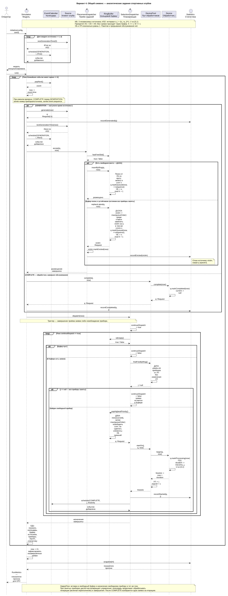
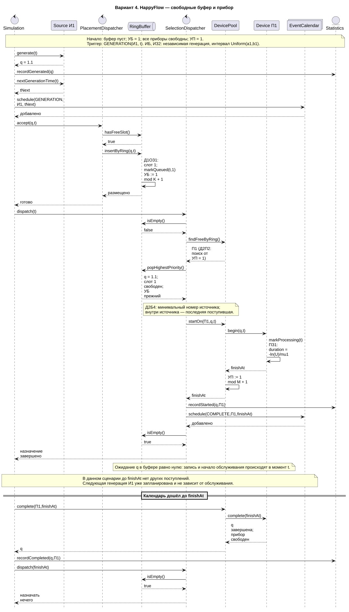
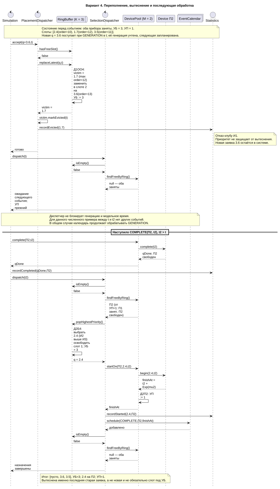
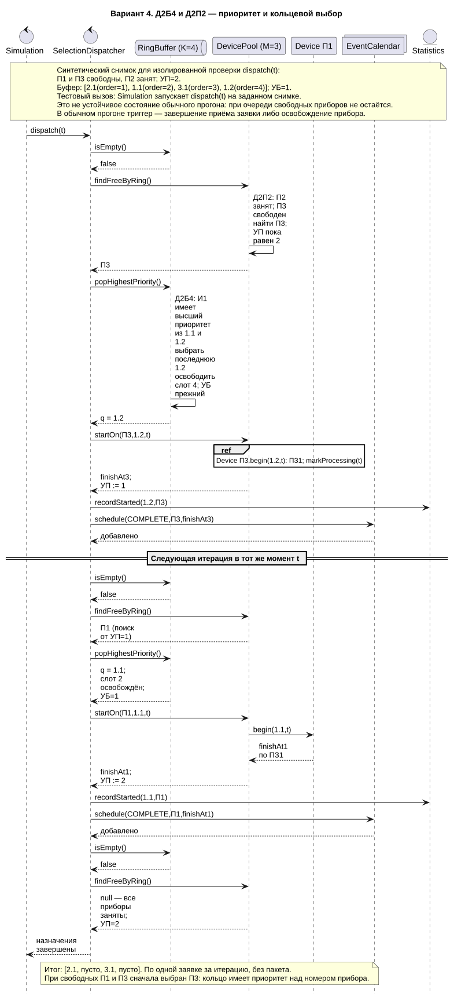
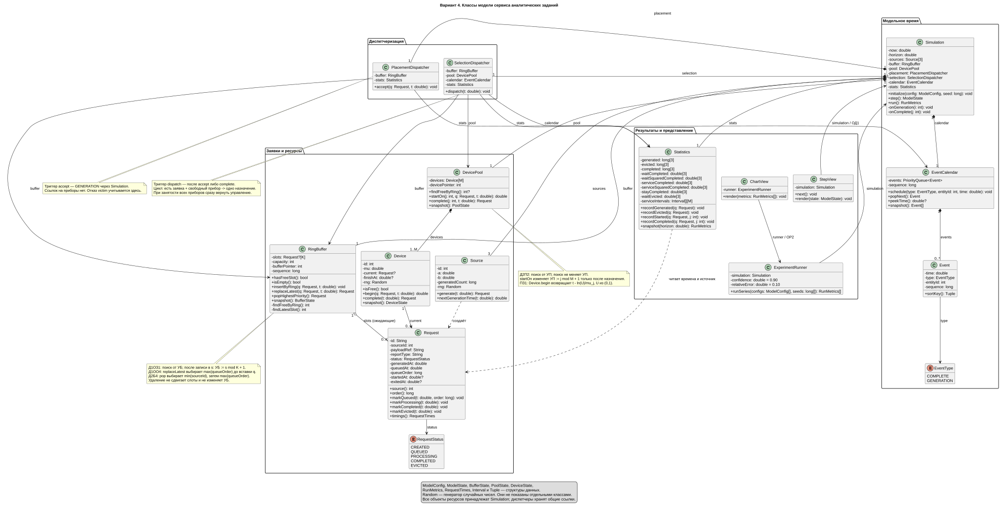
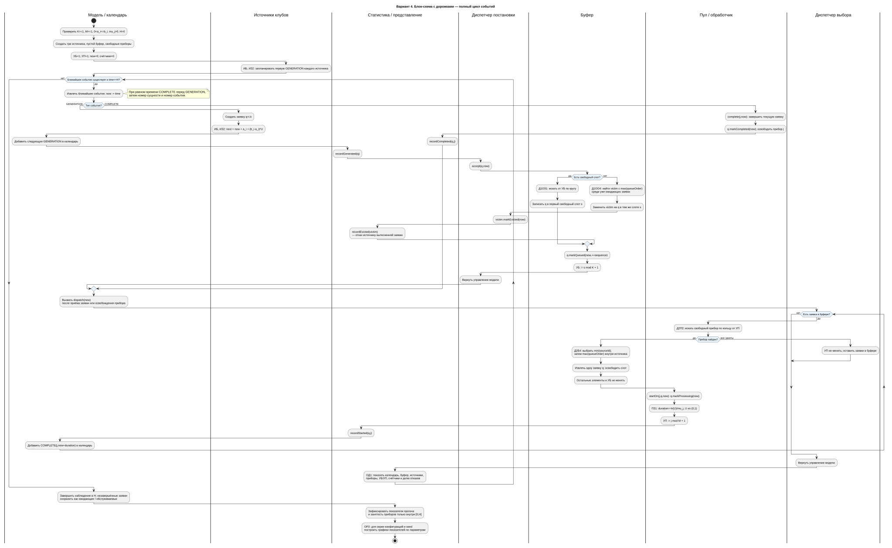
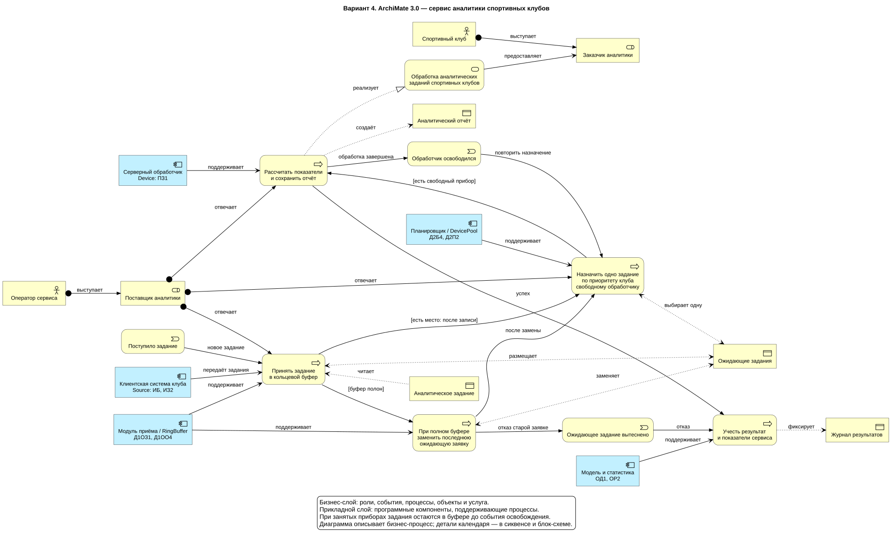

Первичные артефакты · Вариант 4Добров М. Г. · группа 5130904/40106
ИБ · ИЗ2 · ПЗ1 · Д1ОЗ1 · Д1ОО4 · Д2П2 · Д2Б4 · ОР2 · ОД1
Три клуба → приём → общий кольцевой буфер → выбор по приоритету клуба → свободный обработчик по кольцу → аналитический отчёт.
Все заявки проходят через буфер. При переполнении вытесняется последняя старая ожидающая заявка. Среди заявок одного клуба выбирается последняя поступившая.
Подробное описание Markdown · Контрольные сценарии
Нажмите на диаграмму, чтобы открыть масштабируемый SVG. Галерея работает локально.
PlantUML · Открыть SVG и увеличить · PNG






